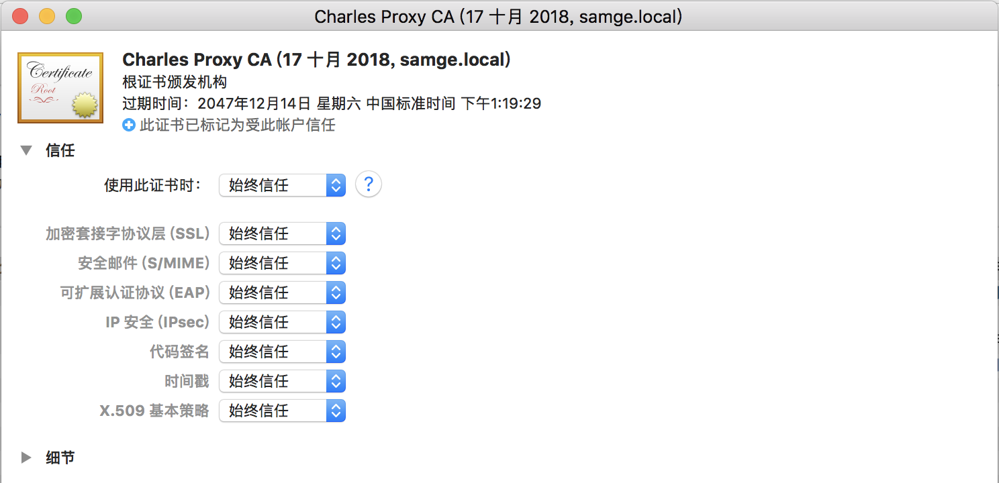
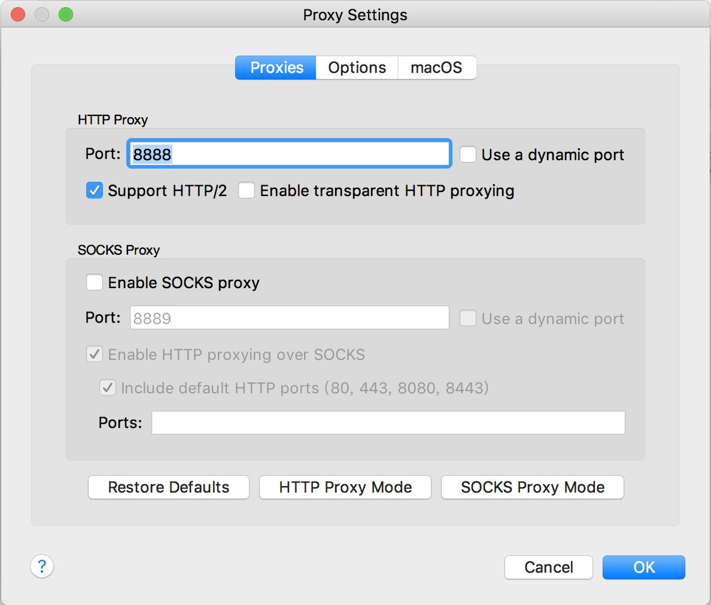
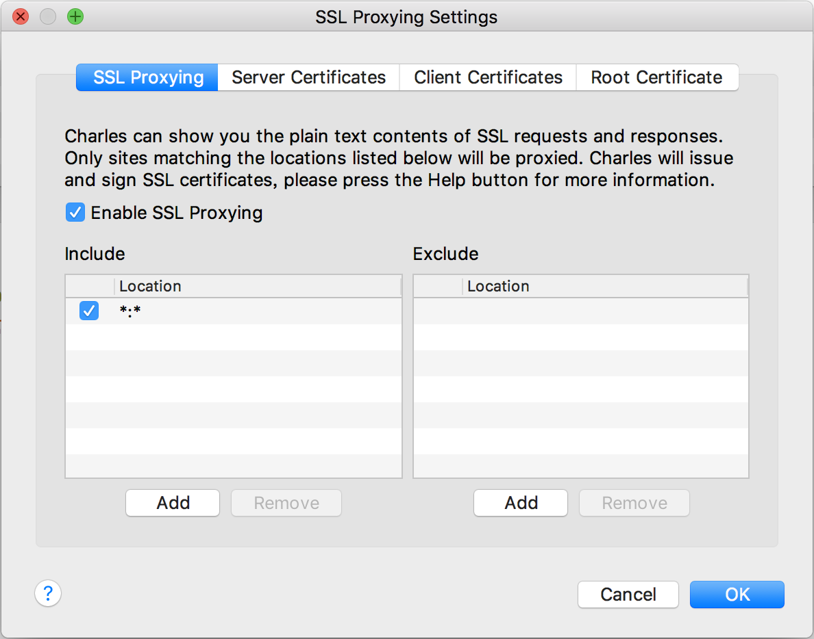
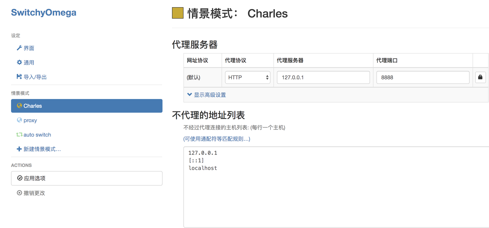

NET::ERR_CERT_DATE_INVALID
- 描述：开发环境，接口请求转 https，Chrome 开发者工具控制台报错
## NET::ERR_CERT_DATE_INVALID。 - 解决方案：Chrome HSTS异常导致无法访问HTTPS网页、Re-Hashed: How to clear HSTS settings in Chrome and Firefox
- 涉及点：List of Chrome URLs、hsts
Chrome插件本地导出
- 描述：由于某些原因，Chrome 应用商店无法浏览。对已下载的 Chrome 插件导出安装。
- 解决方案：
- 地址栏输入
chrome://extensions/, 开启开发者模式，打开待导出插件的详细信息，记录扩展程序 ID。 - 地址栏输入
chrome://version/, 记录个人资料路径。 - 扩展程序路径即为：个人资料路径 + ‘Extensions’ + 扩张程序 ID。终端进入拓展程序路径目录，目录下还有扩展程序的对应版本目录，记录扩展程序版本目录。
- 回到扩展程序详情页，点击打包程序，输入扩展程序版本目录并点击打包扩展程序。
- 进入扩展程序路径，拷贝
crx格式文件即可。（prm为密钥文件）
- 地址栏输入
- 涉及点：无
Cookie、跨域请求、请求方式
- 描述：不同的请求方式（fetch、axios等）跨域请求时，是否主动携带 Cookie
- 解决方案：Cookie的设置、读取以及是否自动携带问题
- 涉及点：Fetch、XMLHttpRequest
github 资源下载慢
- 描述：GitHub clone 开源项目，国内下载资源慢
- 可能解决方案：简单有效的方法是，修改 host 文件，添加
192.30.253.112 github.com。
本地开发环境获取 Cookie
- 描述：后端服务部署到测试环境时，本地开发无法获取非同域名下的 Cookie
- 解决方案：修改 host 文件，DNS 解析，IP 映射到相应的子域名下。
1
2
3
4
5
6sudo vi /etc/hosts
# hosts文件
# 比如测试地址 test.domain.com
127.0.0.1 local.domain.com
Charles 抓去 https 请求显式 unknown
- 描述：抓去 https 请求时，会标红显式
unknown - 解决方案：参考以下设置项。
CharlesInstallCASetting:

CharlesProxyCA:

CharlesProxySetting:

CharlesProxySSLSetting:

SwitchyOmegaCharles:

父层 overflow 需要子层溢出
- 描述：父层使用属性 overflow，子层类似于弹窗的表现，需要溢出。
- 解决方案：容易被误解的overflow:hidden
withCredentials 请求未返回资源
- 描述：向 CDN 服务跨域请求资源，资源未响应。
- 解决方案：将 XMLHttpRequest 的 withCredentials 标志设置为 true，从而向服务器发送 Cookies。因为这是一个简单 GET 请求，所以浏览器不会对其发起“预检请求”。但是，如果服务器端的响应中未携带
Access-Control-Allow-Credentials: true，浏览器将不会把响应内容返回给请求的发送者。 - 涉及点：Access_control_CORS